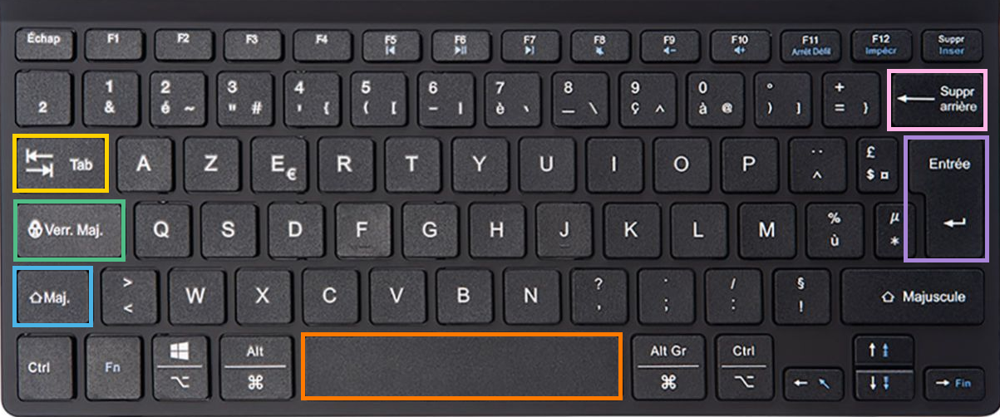

Les touches essentielles du clavier
Objectif : Connaître les 6 touches indispensables pour écrire et naviguer au quotidien
💡 Conseil important
Ces touches se trouvent toutes dans la zone principale du clavier. Repérez-les une par une avant de passer à la suite. Elles sont utilisées dans presque toutes les situations !
Les 6 touches à connaître
Barre d'espace
La grande touche en bas du clavier. Elle permet d'insérer un espace entre les mots lors de la saisie d'un texte.
La grande touche en bas du clavier. Elle permet d'insérer un espace entre les mots lors de la saisie d'un texte.
Maj. (Majuscule)
En maintenant cette touche enfoncée pendant qu'on appuie sur une lettre, celle-ci s'écrit en majuscule. Relâchée, on revient aux minuscules.
En maintenant cette touche enfoncée pendant qu'on appuie sur une lettre, celle-ci s'écrit en majuscule. Relâchée, on revient aux minuscules.
Verr. Maj. (Verrouillage Majuscule)
Un appui sur cette touche bloque tout le clavier en majuscules. Un second appui désactive le verrouillage et revient aux minuscules.
Un appui sur cette touche bloque tout le clavier en majuscules. Un second appui désactive le verrouillage et revient aux minuscules.
Tab (Tabulation)
Permet de passer d'un champ à un autre dans un formulaire, ou de naviguer entre les éléments cliquables d'une page sans utiliser la souris.
Permet de passer d'un champ à un autre dans un formulaire, ou de naviguer entre les éléments cliquables d'une page sans utiliser la souris.
Retour arrière (ou Suppr arrière)
Efface le caractère situé à gauche du curseur. Très utile pour corriger une faute de frappe au fur et à mesure.
Efface le caractère situé à gauche du curseur. Très utile pour corriger une faute de frappe au fur et à mesure.
Entrée
Permet de passer à la ligne lors de la saisie d'un texte, ou de valider une action comme confirmer un formulaire ou lancer une recherche.
Permet de passer à la ligne lors de la saisie d'un texte, ou de valider une action comme confirmer un formulaire ou lancer une recherche.
Aide visuelle

Barre d'espace : grande touche en bas au centre
Maj. ⇧ : à gauche, au-dessus de Ctrl
Verr. Maj. 🔒 : à gauche, en dessous de Tab
Tab ↹ : à gauche, au-dessus de Verr. Maj.
Retour arrière ← : en haut à droite
Entrée ↵ : à droite, grande touche verticale
Repérez chaque touche sur votre propre clavier